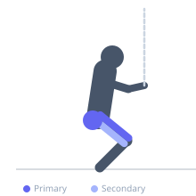
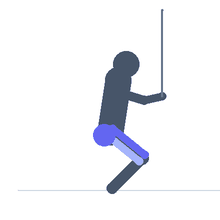

Exercise guide / Lateral Band Walks — Low Squat Position
Lateral Band Walks — Low Squat Position
A lateral band walk performed in a deep squat position (hips at or below knee level), which dramatically increases the gluteus maximus and quadriceps demand compared to the standard quarter-squat lateral walk. The low position also recruits the hip abductors through a longer arc of abduction. This advanced rehabilitation progression is used in late-stage ACL, hip, and knee programs when the patient has developed sufficient strength for high-load lateral movement patterns.
Primary muscles
gluteus medius
gluteus maximus
rectus femoris
Secondary muscles
vastus lateralis
adductor magnus
Stabilizers
transverse abdominis
Equipment
Resistance Band (Loop / Mini Band)


Starting position
- Place a mini band loop above the knees. Descend to a deep squat position with hips at or slightly below knee level, feet hip-width apart and toes slightly out.
Setup
- Only use this variation once the standard lateral band walk is mastered. Clear a straight path of 10-15 meters for the walk.
Steps
- Step 1: Descend to a deep squat position with the band above the knees maintaining tension.
- Step 2: Maintain the squat depth throughout — hips must not rise during the walk.
- Step 3: Take controlled lateral steps in one direction for the prescribed number of steps.
- Step 4: Reverse direction without rising. Continue for the full prescribed distance.
Coaching cues
- Push the knees out against the band — do not let them cave inward
- Stay down — your hips should not rise between steps
- Take medium steps — too wide creates valgus; too narrow loses the stimulus
Breathing
- Breathe continuously. The sustained squat is very demanding — rhythm breathing is essential.
Range of motion
- Hip at or below knee level maintained throughout. Step width keeps band taut without valgus collapse.
Tempo
- 1 step per 1.5-2 seconds. Controlled — no rushing.
Common mistakes
- Rising out of the squat between steps — the hip must remain at the prescribed depth throughout
- Taking too large steps that force knee valgus under band resistance
- Letting the knees collapse inward — actively push the knees out against the band
Safety
- Ensure full ROM squat is pain-free and cleared before attempting loaded lateral movement at this depth
- Reduce squat depth if knee pain is present — work at a pain-free depth
Training
- endurance: 8–20 reps
- endurance: 2–3 sets
- Rest: {'endurance': 60}